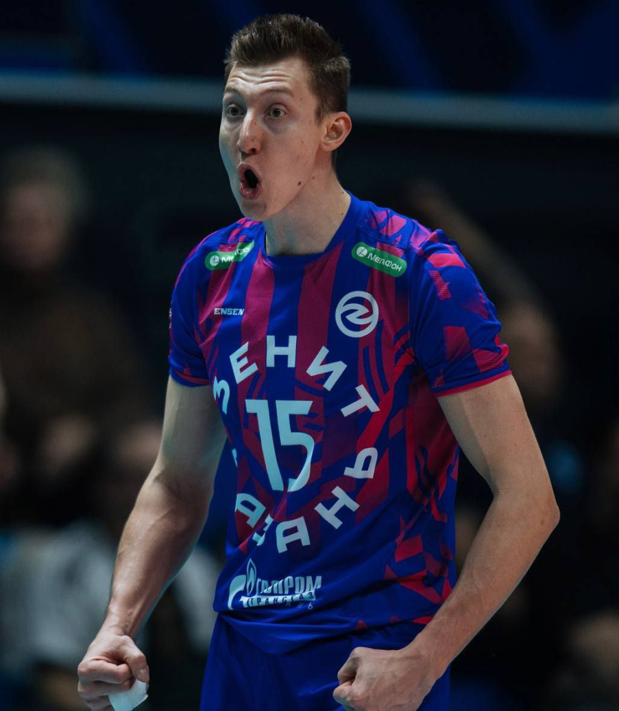
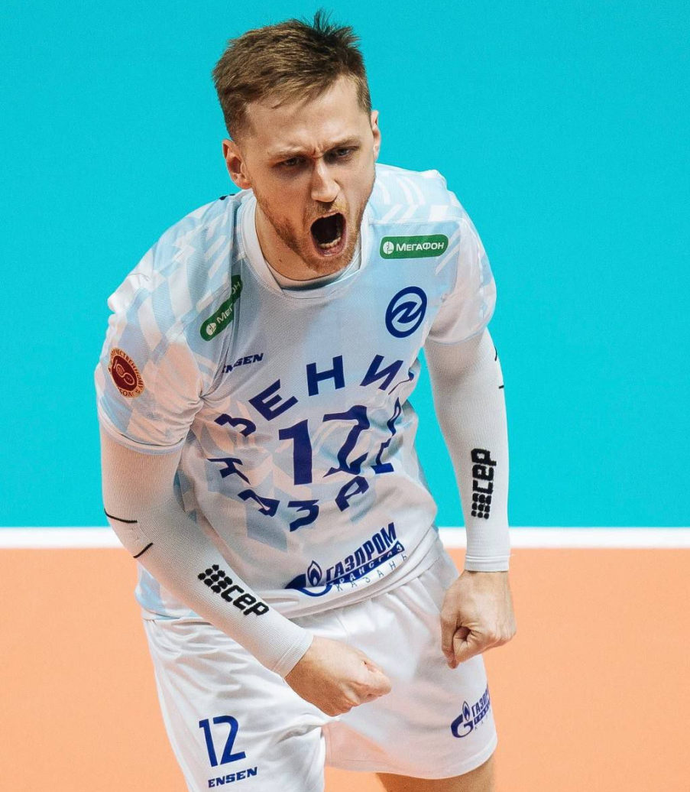
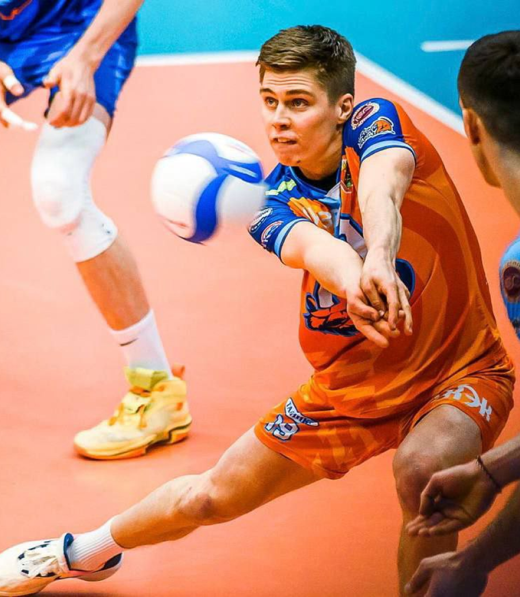

18.06.2024
Лучший игрок
Волейболист казанского «Зенита» Дмитрий Волков прокомментировал победу команды в финальном матче Кубка России.
«Первые эмоции? Всё отлично, классно, круто. Побеждать, конечно, всегда приятно. От победы приятные ощущения. Мы шли долго к этому. Можно сказать, что в ущерб чемпионату в каких-то играх.Тяжело было и с Новосибирском (Локомотив) и сегодня. Классно, что всё закончилось так. Мы хорошо играли. Спасибо тренеру, что у него горло болело. Мне кажется, так даже лучше получилось», — приводит слова Волкова пресс-служба казанского «Зенита».

26.04.2024
Чемпионат России
Парни Алексея Вербова закрепили преимущество в серии до трёх побед! Хотя во втором матче соперники оказали куде большее сопротивление: подачами мучал Антон Сёмышев, в атаке царил Цветан Соколов. Команда Константина Брянского даже взяла первую за 19 последних сетов в плей-офф партию у казанцев. И могли уходить на супер-тай-брейк! Но в концовке матча разошёлся Дмитрий Волков — его блоком встреча и завершилась.

18.02.2024
Зенит-Казань (3:0) Кузбасс
Главный тренер гостей Сергей Троцкий оставил в запасе нескольких основных игроков команды – Романа Пакшина, Дениса Черейского и Егора Кречетова. Его визави Алексей Вербов бросил в бой оптимальный состав.
В дебюте встречи в центре внимания был Сэм Деру. Бельгийский доигровщик «Зенита» сначала забил, а затем дважды закрыл блоком линию, в которую пытались забить Александр Маркин и Душан Петкович – 5:3. Решающий рывок казанцы совершили на серии подач Максима Михайлова с эйсом (10:9 – 15:9), блестяще реализовывая контратаки. В первом сете зенитовцы забили 72% мячей, а вот гости пять раз уперлись в блок.
Во второй партии у «Кузбасса» на площадку вышли лидеры и игра выровнялась. Более того, когда Алексей Лобызенко закрыл атаку Михайлова, кемеровчане повели в концовке 18:17.